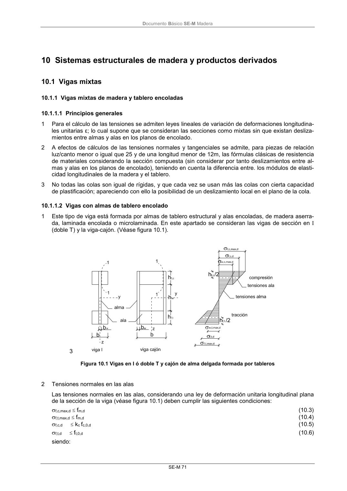
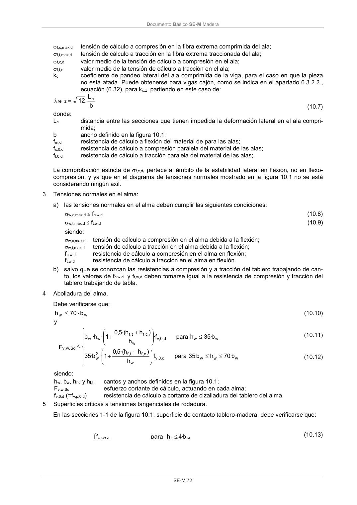
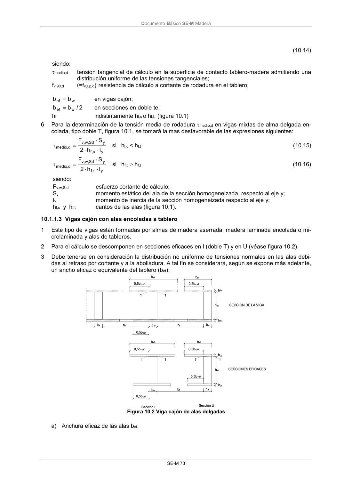

DB-SE-M · 10.1.1.2 Vigas con almas de tablero encolado · versión 2019-12-20 · capa oficial
Formatos: JSON compacto · Markdown · PDF fuente
Ámbito del documento · texto del ámbito · documento y tablas
ID técnico a0137 · PDF pág. 77-79 · jerarquía no validada por persona · contrastado con el literal de la página 77 (candidato tipográfico); no validado por persona · padre: raíz
10.1.1.2 Vigas con almas de tablero encolado 1 Este tipo de viga está formada por almas de tablero estructural y alas encoladas, de madera aserra- da, laminada encolada o microlaminada. En este apartado se consideran las vigas de sección en I (doble T) y la viga-cajón. (Véase figura 10.1). 3 Figura 10.1 Vigas en I ó doble T y cajón de alma delgada formada por tableros 2 Tensiones normales en las alas Las tensiones normales en las alas, considerando una ley de deformación unitaria longitudinal plana de la sección de la viga (véase figura 10.1) deben cumplir las siguientes condiciones: f,c,max,d fm,d (10.3) f,t,max,d fm,d (10.4) f,c,d kc fc,0,d (10.5) f,t,d ft,0,d (10.6) siendo: DocumentoBásico SE-M Madera SE-M 72 f,c,max,d tensión de cálculo a compresión en la fibra extrema comprimida del ala; f,t,max,d tensión de cálculo a tracción en la fibra extrema traccionada del ala; f,c,d valor medio de la tensión de cálculo a compresión en el ala; f,t,d valor medio de la tensión de cálculo a tracción en el ala; kc coeficiente de pandeo lateral del ala comprimida de la viga, para el caso en que la pieza no está atada. Puede obtenerse para vigas cajón, como se indica en el apartado 6.3.2.2., ecuación (6.32), para kc,z, partiendo en este caso de: b L . 12 c z rel (10.7) donde: Lc distancia entre las secciones que tienen impedida la deformación lateral en el ala compri- mida; b ancho definido en la figura 10.1; fm,d resistencia de cálculo a flexión del material de para las alas; fc,0,d resistencia de cálculo a compresión paralela del material de las alas; ft,0,d resistencia de cálculo a tracción paralela del material de las alas; La comprobación estricta de f,c,d, pertece al ámbito de la estabilidad lateral en flexión, no en flexo- compresión; y ya que en el diagrama de tensiones normales mostrado en la figura 10.1 no se está considerando ningún axil. 3 Tensiones normales en el alma: a) las tensiones normales en el alma deben cumplir las siguientes condiciones: w,c,max,d fc,w,d (10.8) w,t,max,d ft,w,d (10.9) siendo: w,c,max,d tensión de cálculo a compresión en el alma debida a la flexión; w,t,max,d tensión de cálculo a tracción en el alma debida a la flexión; fc,w,d resistencia de cálculo a compresión en el alma en flexión; ft,w,d resistencia de cálculo a tracción en el alma en flexión. b) salvo que se conozcan las resistencias a compresión y a tracción del tablero trabajando de can- to, los valores de fc,w,d y ft,w,d deben tomarse igual a la resistencia de compresión y tracción del tablero trabajando de tabla. 4 Abolladura del alma. Debe verificarse que: w w b 70 h (10.10) y w w w d , 0, v w c,f t,f 2 w w w d , 0 ,v w c,f t,f w w Sd , w ,v b· 70 h b· 35 para f· h ) h h ·( 5,0 1 · b· 35 b· 35 h para f· h ) h h ·( 5,0 1 · h· b F (10.11) (10.12) siendo: hw, bw, hf,c y hf,t cantos y anchos definidos en la figura 10.1; Fv,w,Sd esfuerzo cortante de cálculo, actuando en cada alma; fv,0,d (=fv,p,0,d) resistencia de cálculo a cortante de cizalladura del tablero del alma. 5 Superficies críticas a tensiones tangenciales de rodadura. En las secciones 1-1 de la figura 10.1, superficie de contacto tablero-madera, debe verificarse que: ef f d 90 v b· 4 h para f (10.13) DocumentoBásico SE-M Madera SE-M 73 (10.14) siendo: medio,d tensión tangencial de cálculo en la superficie de contacto tablero-madera admitiendo una distribución uniforme de las tensiones tangenciales; fv,90,d (=fv,r,p,d)resistencia de cálculo a cortante de rodadura en el tablero; w ef b b en vigas cajón; 2 / b b w ef en secciones en doble te; hf indistintamente hf,c o hf,t, (figura 10.1) 6 Para la determinación de la tensión media de rodadura medio,d en vigas mixtas de alma delgada en- colada, tipo doble T, figura 10.1, se tomará la mas desfavorable de las expresiones siguientes: y c,f y Sd , w , v d , medio I h 2 S F si hf,c < hf,t (10.15) y t,f y Sd , w , v d , medio I h 2 S F si hf,c hf,t (10.16) siendo: Fv,w,S,d esfuerzo cortante de cálculo; Sy momento estático del ala de la sección homogeneizada, respecto al eje y; Iy momento de inercia de la sección homogeneizada respecto al eje y; hf,c y hf,t cantos de las alas (figura 10.1).



PDF fuente redistribuible: copia fiel enlazada en esta página (SHA256 verificado).